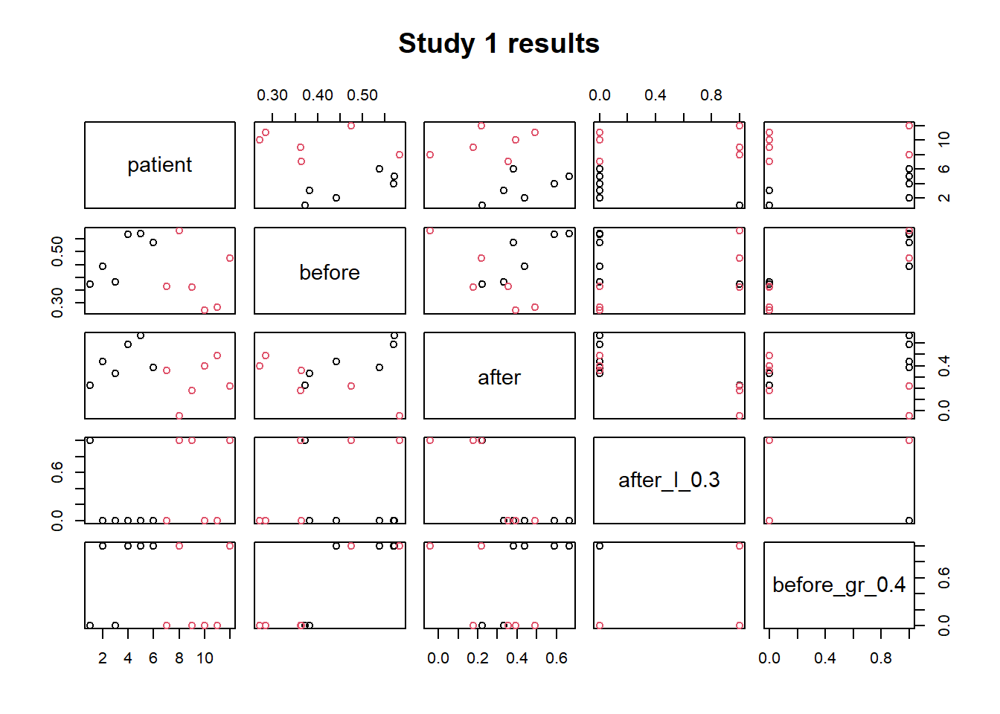
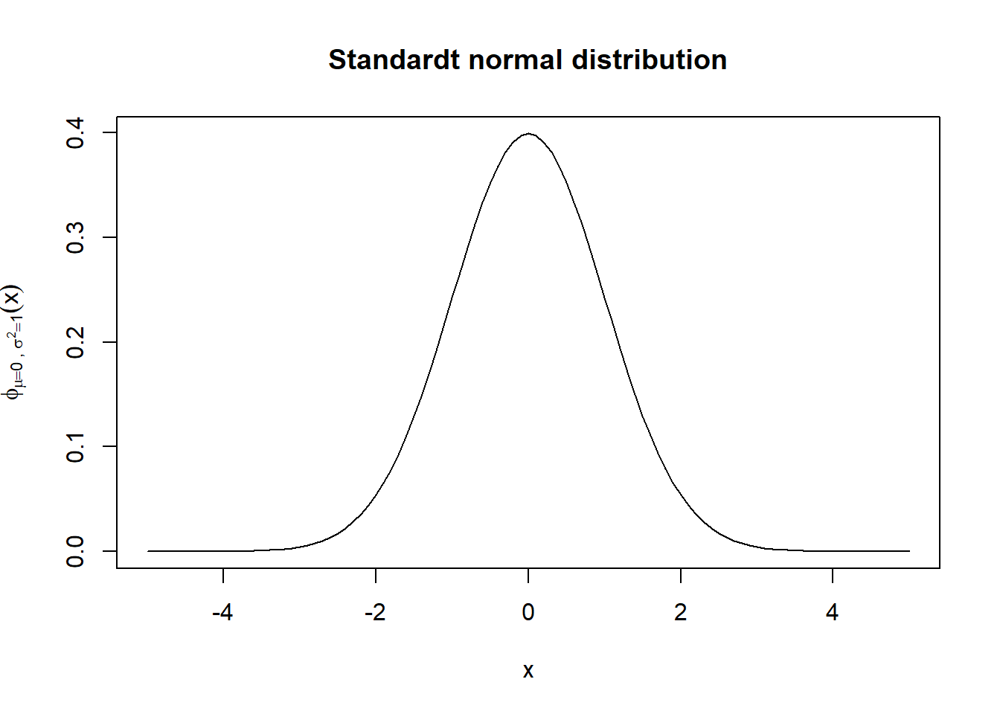
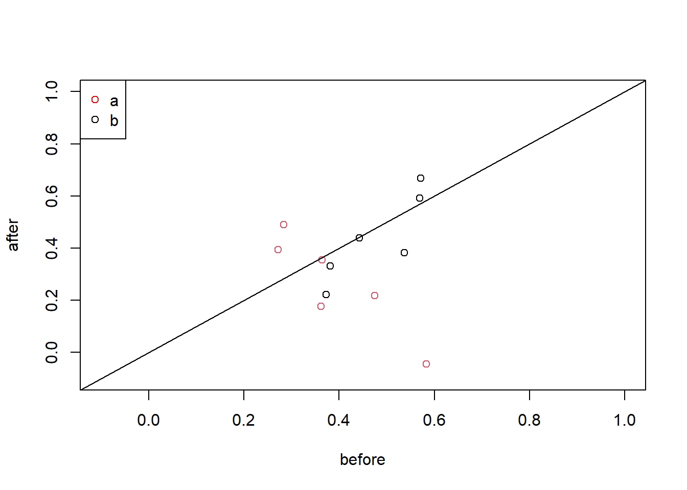

R intro
Dowload R and RStudio
We will describe the main step to install R and RStudio on your local machine.
R installation
Windows: go to https://cran.r-project.org/bin/windows/base/ and download the .exe file and install it on your machine.
Macosx: go to https://cran.r-project.org/bin/macosx/ and download the file according to the spec. of your machine.
Linux: go to https://cran.r-project.org/bin/linux/ select your distribution and follow the instructions to install R and its dependencies.
RStudio installation
Go to https://www.rstudio.com/products/rstudio/download/#download and download the installation file according to your operative system.R as a calculator
Numeric operators
Now let’s get in touch with the basic R operators, we want to calculate the following expressions. \[\left[\frac{1}{2}\cdot\left(e^{5}-\frac{2}{3^{5}}\right)\right]-\sqrt{2\cos\left(\frac{\pi}{3}\right)\sin\left(\frac{2\cdot\pi}{3}\right)}\,,\\ {10\choose 4}\ln(2)\,.\]
((1/2)*(exp(5)-2/(3^5)))-sqrt(2*cos(pi/3)*sin(2*pi/3))
## [1] 73.27186
factorial(10)/(factorial(4)*factorial(6))*log(2)
## [1] 145.5609Instead of line brakers to separate different statement you can use the semicolon operator ;.
2/0;0/0;sin(pi) #why is not zero?## [1] Inf## [1] NaN## [1] 1.224606e-16An important operator is the comment operator #. Whenever R encounters this operator, it will ignore everything printed after it (in the current line).
Logical operators
The logical operators are very important for data manipulation. When R evaluates statements containing logical operators it will return either TRUE or FALSE.
1< 2 #less than
## [1] TRUE
1<=2 #less than or equal
## [1] TRUE
1> 2 #greater than
## [1] FALSE
1>=2 #greater than or equal
## [1] FALSE
1==2 #equal than
## [1] FALSE
1!=2 #not equal
## [1] TRUE
TRUE & FALSE # and
## [1] FALSE
TRUE & FALSE # or
## [1] FALSE23 & 45; 0 | 1## [1] TRUE## [1] TRUENeed an help, ask R
While reading an R script, you can bump into an unknown R’function, the first thing to do is to ask directly R. To do this you can use the function help(), remember put the name of the function inside the brackets.
Who knows what does the lm() function do?
help(lm)Objects
R is an object oriented language. This mean that everything in R is an object. When we run the script we create and manipulate object. To master R, it is important to understand the basic data types and data structures and how to operate on them.
Types
The type of an object is a property assigned to an object that determines how generic functions operate with it. The typeof() function return the type of an object. R distinguishes the following main types of object:
- integer: integer numbers ;
- real (double): real numbers;
- character: elements made up of text-strings; for example, “Germany”;
- logical: data containing logical constants, namely, TRUE and FALSE.
Try to guess which is the outcome of this sum:
1+1.3+'a'+TRUE## Error in 1 + 1.3 + "a": non-numeric argument to binary operatorAssignements
For sure we do not want to compute an object every time we need it, especially if comes from a time-consuming calculation. To store an object and to easily recall it, we assign it to a variable name through the assignment operator <- or =.
x<-2+5On the environment tab, up-right corner of RStudio, you will find a list of the object stored in the current working directory, alternatively you can use the ls() command. To remove the object, you can use the rm() function, where in the brackets put the name of the variable.
rm(x)Structures
We will just introduce the need data structures for this course we will leave out others structures, such as factor and functions.
Vectors
Vectors are one-dimensional sequences of elements of the same type. To crate a vector, you need to use the c() function, where cstands for concatenate.
a<-c(6,9,12,15)
a<-c(a,c(0,3))# concatenate the vector with another vector and store it with the same name
# equivalently a<-c(a,0,3)Let’s sort the created vector in ascending or descending order using the sort() function. Check its help pages to see what additional options you can specify, look at the decreasing argument.
sort(a); sort(a, decreasing=TRUE) #why I don't need to specify decreasing=FALE in the first one## [1] 0 3 6 9 12 15## [1] 15 12 9 6 3 0class(c(a,'b'))## [1] "character"c(a,'b')## [1] "6" "9" "12" "15" "0" "3" "b"For sure manually typing all the elements of the vector class() isn’t the only option we can use the function seq():
seq(from=0,to=15,by=3) #setting the increments with the argument by## [1] 0 3 6 9 12 15seq(from=0,to=16, length.out=6) #setting the length of the the vector ## [1] 0.0 3.2 6.4 9.6 12.8 16.0seq(0, 15, 2)## [1] 0 2 4 6 8 10 12 14Furthermore, you can use the colon operatoe, namely :, to tell R to create an integer vector with a regular numbers sequence.
pi:6;8:-8## [1] 3.141593 4.141593 5.141593## [1] 8 7 6 5 4 3 2 1 0 -1 -2 -3 -4 -5 -6 -7 -8Basic Vector operators
Here we show some useful mathematical functions that works with real vectors.
x<-seq(0.4,100,3) # define a vector x
sum(x)
## [1] 1696.6
prod(x)
## [1] 3.285916e+52
min(x)
## [1] 0.4
max(x)
## [1] 99.4
length(x)
## [1] 34
y<-seq(pi,56.8,length.out=length(x)) #create a vector with equal length of y
head(x+y);head(x*y) #head function just give the first six elements
## [1] 3.541593 8.167605 12.793617 17.419630 22.045642 26.671654
## [1] 1.256637 16.209857 40.919151 75.384519 119.605961 173.583477Vector slicing
Slicing a vector is done through the square bracklets [] operator.
x<-c('These','are','not','the','exercise','of','neuroscience','class')
x[c(3,4)] #select the 3rd and the 4th element
## [1] "not" "the"
x[-3] #all except the 3rd element
## [1] "These" "are" "the" "exercise" "of"
## [6] "neuroscience" "class"
x[2:4]
## [1] "are" "not" "the"Logical operators can be very useful in slicing a vector.
y<- -10:20
y<=0 #the logical operator is applied element-wise## [1] TRUE TRUE TRUE TRUE TRUE TRUE TRUE TRUE TRUE TRUE TRUE FALSE
## [13] FALSE FALSE FALSE FALSE FALSE FALSE FALSE FALSE FALSE FALSE FALSE FALSE
## [25] FALSE FALSE FALSE FALSE FALSE FALSE FALSEy[y<=0&y!=-5]## [1] -10 -9 -8 -7 -6 -4 -3 -2 -1 0y[y<0|y>5]## [1] -10 -9 -8 -7 -6 -5 -4 -3 -2 -1 6 7 8 9 10 11 12 13 14
## [20] 15 16 17 18 19 20c(FALSE, TRUE) | c(TRUE, TRUE)## [1] TRUE TRUEWrite an R expression that will return the sum of the vector (2, 1, 4, 2, 1, NA), use the slicing techniques to remove the NA.
x <- c(2, 1, 4, 2, 1, NA)
sum(x[-length(x)]);sum(x,na.rm =TRUE )## [1] 10
## [1] 10Matrices
A matrix is a collection of the same data type arranged into a two dimensional data structure, namely rows and columns. To create matrix, we use the matrix() function which takes the following arguments:
- data: a data vector;
- nrow: the desired number of columns;
- ncol: the desired number of rows;
- byrow: a logical statment to populate the matrix either by row or column, the default is FALSE.
M1<-matrix(data=1,nrow = 2, ncol = 3)
M1 # we use the dim() function to check the dimension of the created matrix
## [,1] [,2] [,3]
## [1,] 1 1 1
## [2,] 1 1 1
dim(M1)
## [1] 2 3matrix(1:11,nrow=4)## Warning in matrix(1:11, nrow = 4): data length [11] is not a sub-multiple or
## multiple of the number of rows [4]## [,1] [,2] [,3]
## [1,] 1 5 9
## [2,] 2 6 10
## [3,] 3 7 11
## [4,] 4 8 1matrix(1:12,nrow=4,byrow=TRUE)## [,1] [,2] [,3]
## [1,] 1 2 3
## [2,] 4 5 6
## [3,] 7 8 9
## [4,] 10 11 12We cran create matrix also binding together vectors by row rbind() using and by columns cbind(). The former function automatically label row of columns name, but you can use rownames() and colnames() to label rows and columns respectively.
x<-c(1001:1010)
y<-c(1,0,0,1,0,0,1,1,0,1)
z<-cbind(x,y)
colnames(z)<-c('patient_id','treatment')
z## patient_id treatment
## [1,] 1001 1
## [2,] 1002 0
## [3,] 1003 0
## [4,] 1004 1
## [5,] 1005 0
## [6,] 1006 0
## [7,] 1007 1
## [8,] 1008 1
## [9,] 1009 0
## [10,] 1010 1Basic Matrix operators
R can do matrix arithmeti. Here you can find a list of some basic operation:
- + - * / standard scalar or by element operations;
- \(\%*\%\) matix multiplication;
- t() transpose;
- det() determinant;
- solve() inverse.
Matrix slicing
As done for the vector we use the squared bracket [] to slice a matrix. Let \(M\) be a matrix the \(m_{i,j}\) element is retrieved in R by [i,j].
M<-matrix(1:9,3,byrow=TRUE)
M
## [,1] [,2] [,3]
## [1,] 1 2 3
## [2,] 4 5 6
## [3,] 7 8 9
M[2,3] #extract the 3rd element of the 2nd row
## [1] 6
M[2:3,] #extract the 2nd and 3rd row
## [,1] [,2] [,3]
## [1,] 4 5 6
## [2,] 7 8 9
M[,3] #extract the 3rd column
## [1] 3 6 9M[,M[3,]>7]## [,1] [,2]
## [1,] 2 3
## [2,] 5 6
## [3,] 8 9Given the vectors x<-c(1:10) and y<-c(1:3), create a matrix \(M\) , such that \(m_{(i,j)}=x_i+y_j\). Use the outer() function.
x<-c(1:7)
y<-c(1:3)
outer(x,y,"+")
## [,1] [,2] [,3]
## [1,] 2 3 4
## [2,] 3 4 5
## [3,] 4 5 6
## [4,] 5 6 7
## [5,] 6 7 8
## [6,] 7 8 9
## [7,] 8 9 10Lists
An R list is an object, which contains elements of different types like, such as numbers, strings, vectors and lists. A list is created using list() function, to access the element of the list we can use the squared brackets [] or $key_name if a key, character, is assigned to the element.
#create a list
x<-list(patient_name='Rob',tratment=c(3,2),'112'='Jo',5)
x[1] # show the key name, if present, and the value in the first entry of the list
## $patient_name
## [1] "Rob"
x[[1]] # reference the first element of the list directly
## [1] "Rob"
x$hospital # there is no such a key
## NULL
x$tratment[2]
## [1] 2
x$'112'
## [1] "Jo"Data frames
A dataframe is a list of named vectors (called columns) of the same length. Therefore each column contains elements of the same type. You can slice a dataframe in the same way that you can slice a matrix, furthermore you can also use the $, as done for the lists, to select columns. We use the data.frame() function to create a data frame
x<-seq(1,10)
y<-letters[1:5] # extract the first five letters of the alphabet
z<-matrix(x,nrow=5,byrow=5)
df<-data.frame(z,treatment=y)
class(df)
## [1] "data.frame"
df
## X1 X2 treatment
## 1 1 2 a
## 2 3 4 b
## 3 5 6 c
## 4 7 8 d
## 5 9 10 e
names(df) #names of the coluns
## [1] "X1" "X2" "treatment"
str(df) #summarize the structure of the data frame
## 'data.frame': 5 obs. of 3 variables:
## $ X1 : int 1 3 5 7 9
## $ X2 : int 2 4 6 8 10
## $ treatment: chr "a" "b" "c" "d" ...
with(df,X1+X2) # that is equal to df$X1+df$X2
## [1] 3 7 11 15 19
subset(df,df$X1>5) # that is equal to df[df$X1>5,]
## X1 X2 treatment
## 4 7 8 d
## 5 9 10 eLoad and save data frames
Creating and editing a data frames in R can be cumbersome, indeed R isn’t a spreadsheet. For this reason the data are created using different programming languages and then loaded into R. We will show how to load .csv, file, but keep in mind that R can load a huge variety of file formats.
We use the commands getwd(), setwd() and list.files() to manage our working directory. R uses / as path separator even on Windows.
getwd() # print the name of the current working directory## [1] "C:/Users/frenc/Documents/GitHub/Intro_statistics_neuroscience"#setwd("./data") change the working directory to the data, ./ is very useful to create relative path
list.files("./data") # list the files in the current directory## [1] "dimarta_trial.csv" "Exercise_10_1.csv"
## [3] "Exercise_8_2_TwoWay.csv" "Exercise_8_3_Repeated_OneWay.csv"
## [5] "Exercise_8_3_Repeated_TwoWay.csv" "study1.csv"
## [7] "study2.csv" "study3.csv"Always try to keep separate the data from the analysis, working inside the data directory could lead to data loss or corruption. Let’s say we want to read the study1.csv() file. We use the general function read.table(), that allows to set the delimiter , to include or not the headers, and more.
study1<-read.table("./data/study1.csv",sep=";",header = TRUE) # the values are separated by ; in the csv file
head(study1)
## patient group before after
## 1 1 a 0.3722790 0.2210778
## 2 2 a 0.4421391 0.4396936
## 3 3 a 0.3816662 0.3312596
## 4 4 a 0.5689327 0.5908162
## 5 5 a 0.5711550 0.6679012
## 6 6 a 0.5373978 0.3811533
str(study1)
## 'data.frame': 12 obs. of 4 variables:
## $ patient: int 1 2 3 4 5 6 7 8 9 10 ...
## $ group : chr "a" "a" "a" "a" ...
## $ before : num 0.372 0.442 0.382 0.569 0.571 ...
## $ after : num 0.221 0.44 0.331 0.591 0.668 ...
stud1_new<-subset(study1,study1$group=='a') # keep only the data from group aIn order to save the new data frame stud1_new() we use the general function write.table().
write.table(stud1_new,file="./data/study1_new.csv",col.names=TRUE,sep=";")Exercises
Exercise 1
Generate a vector of length 20 containing some numbers and sort it in descending order. What do the related rank() and order() functions do? Create a matrix (vector,vector of ranks). Use order() function to sort the vector in ascending order.
x <- c(seq(1,15,by=2),-4:4,pi,11,13)
print(x) # print the vector
## [1] 1.000000 3.000000 5.000000 7.000000 9.000000 11.000000 13.000000
## [8] 15.000000 -4.000000 -3.000000 -2.000000 -1.000000 0.000000 1.000000
## [15] 2.000000 3.000000 4.000000 3.141593 11.000000 13.000000
length(x) # return the length of the variable
## [1] 20
# decreasing oder:
sort(x, decreasing=TRUE)
## [1] 15.000000 13.000000 13.000000 11.000000 11.000000 9.000000 7.000000
## [8] 5.000000 4.000000 3.141593 3.000000 3.000000 2.000000 1.000000
## [15] 1.000000 0.000000 -1.000000 -2.000000 -3.000000 -4.000000
#na.last argument controlling the treatment of NA
sort(c(5,7,1,NA,3))
## [1] 1 3 5 7
sort(c(5,7,1,NA,3), na.last=TRUE) #put last
## [1] 1 3 5 7 NA
sort(c(5,7,1,NA,3), na.last=FALSE) # put first
## [1] NA 1 3 5 7
sort(c(5,7,1,NA,3), na.last=NA) #removed
## [1] 1 3 5 7
# return the vector of ranks
rank(x)
## [1] 6.5 9.5 13.0 14.0 15.0 16.5 18.5 20.0 1.0 2.0 3.0 4.0 5.0 6.5 8.0
## [16] 9.5 12.0 11.0 16.5 18.5
sum(rank(x))
## [1] 210
cbind(x, "rank()"=rank(x))
## x rank()
## [1,] 1.000000 6.5
## [2,] 3.000000 9.5
## [3,] 5.000000 13.0
## [4,] 7.000000 14.0
## [5,] 9.000000 15.0
## [6,] 11.000000 16.5
## [7,] 13.000000 18.5
## [8,] 15.000000 20.0
## [9,] -4.000000 1.0
## [10,] -3.000000 2.0
## [11,] -2.000000 3.0
## [12,] -1.000000 4.0
## [13,] 0.000000 5.0
## [14,] 1.000000 6.5
## [15,] 2.000000 8.0
## [16,] 3.000000 9.5
## [17,] 4.000000 12.0
## [18,] 3.141593 11.0
## [19,] 11.000000 16.5
## [20,] 13.000000 18.5
# order return the index order corresponding to the ascending order of the elements of the vector
x[order(x,decreasing = FALSE)]
## [1] -4.000000 -3.000000 -2.000000 -1.000000 0.000000 1.000000 1.000000
## [8] 2.000000 3.000000 3.000000 3.141593 4.000000 5.000000 7.000000
## [15] 9.000000 11.000000 11.000000 13.000000 13.000000 15.000000Exercise 2
Add two columns to the study1 data frame:
A column with logical object, that says for every entry of the before column if is lower or not than 0.3.
A column with logical object, that says for every entry of the after column if is grater or not than 0.4.
Return the rows that fulfill both the conditions of the former columns, namely rows with value true in both columns. How many patients belonging to group a fulfill this condition?
temp<-study1$after<0.3 #create an extra vector
study1<-cbind(study1,temp) # bind together the data frame and the vector
names(study1)[length(study1)]<-'after_l_0.3' # similarly tail(study1)<-'after_l_0.3'
#in a more compact way
study1<-data.frame(study1, 'before_gr_0.4'=with(study1,before>0.4))
head(study1)## patient group before after after_l_0.3 before_gr_0.4
## 1 1 a 0.3722790 0.2210778 TRUE FALSE
## 2 2 a 0.4421391 0.4396936 FALSE TRUE
## 3 3 a 0.3816662 0.3312596 FALSE FALSE
## 4 4 a 0.5689327 0.5908162 FALSE TRUE
## 5 5 a 0.5711550 0.6679012 FALSE TRUE
## 6 6 a 0.5373978 0.3811533 FALSE TRUEsubset(study1,study1$before_gr_0.4 & study1$after_l_0.3)## patient group before after after_l_0.3 before_gr_0.4
## 8 8 b 0.5827886 -0.0446239 TRUE TRUE
## 12 12 b 0.4743519 0.2184937 TRUE TRUEBasic plotting
One of the basic plotting functions is the plot() function. This is a generic function, namely the type of plot produced is dependent on the type or class of the first argument. For example:
- plot(x_vector, y_vector) produces a scatterplot of y against x
- plot(x_vector) a scatterplot of x against index of x
- plot(dataframe) each variable against the others
str(study1)
## 'data.frame': 12 obs. of 6 variables:
## $ patient : int 1 2 3 4 5 6 7 8 9 10 ...
## $ group : chr "a" "a" "a" "a" ...
## $ before : num 0.372 0.442 0.382 0.569 0.571 ...
## $ after : num 0.221 0.44 0.331 0.591 0.668 ...
## $ after_l_0.3 : logi TRUE FALSE FALSE FALSE FALSE FALSE ...
## $ before_gr_0.4: logi FALSE TRUE FALSE TRUE TRUE TRUE ...
plot(subset(study1,select=-c(group)),
main= 'Study 1 results', # title of the plot
col = factor(study1$group) # color for the points accoding to the group
)
The curve() function draws the given expression over the given interval [from,to].
curve(exp(-0.5*(x^2))/sqrt(2*pi),from=-5,to=5,
xlab="x", #label of the x axis
main= "Standardt normal distribution",
ylab=bquote(phi[mu==0~','~sigma^{2}==1](x)) #label of y axis
)
Exercises
Exercise 1
Plot the points (study1$before,study1$after) and use the function abline() to add a straight line with intercept 1 and slope 0. Use the example in ?abline to understand how to use the latter function.
plot(study1$before,study1$after,col=factor(study1$group),
xlim=c(-0.1,1),
ylim=c(-0.1,1),
xlab="before",ylab="after")
abline(0,1)
# extra how to add the legend
legend("topleft",
legend=c("a","b"),
col=c('red',"black"),
pch = 1)
Exercise 2
Use the seq() function to generate a vector x of length 100 of evenly spaced numbers between 0 and \(2\pi\). Draw a plot of x agianst sin(x). Look at the type argument of function plot() to draw a connecting line. Use the lines() function to add the cosine to the plot.
x<-seq(from=0, to=2*pi,length.out=100)
plot(x,sin(x),
ylab='', # no y axis label
type='l'# we want to plot a lines that connects the points
) # same curve(sin(x),from=0,to=2*pi)
lines(x,cos(x),col='red') # add the cos
abline(0,0) # add the x axis